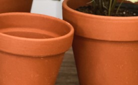
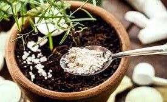

Flores
Plantas
Semillas
Macetas
Cuidados
En La Floreria de los Tulipanes, la pasión por las flores nos une. Desde nuestros inicios, nos hemos dedicado a crear arreglos florales que transmiten emociones y alegran cada ocasión. Aunque trabajamos con una variedad de flores, los tulipanes son, sin duda, nuestros favoritos. Su elegancia, diversidad de colores y delicadeza nos inspiran a diario. Creemos que cada flor cuenta una historia y queremos ayudarte a contar la tuya. Ya sea para un evento especial, un regalo o simplemente para embellecer tu hogar, nuestro equipo está aquí para ofrecerte una experiencia única y personalizada. Nos enorgullece trabajar con proveedores locales y sostenibles, asegurando que cada tulipán que seleccionamos sea de la mejor calidad. Ven y descubre la belleza de los tulipanes con nosotros. ¡Te esperamos!